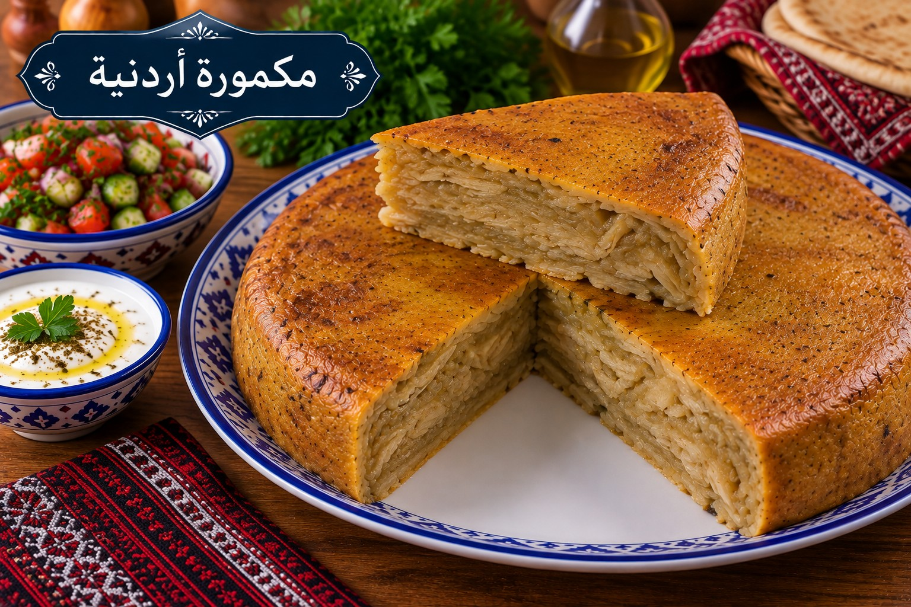

مكمورة
طبقات عجين ودجاج وبصل على الطريقة الأردنية

مقادير مكمورة
- 5 أكواب طحين
- 1½ ملعقة صغيرة ملح للعجين
- ماء فاتر للعجن تدريجيًا
- 1 دجاجة مقطعة
- 6 بصلات كبيرة شرائح
- ½ كوب زيت زيتون
- 2 ملعقة كبيرة سماق
- 1½ ملعقة صغيرة ملح للحشوة
- 1 ملعقة صغيرة فلفل أسود
- 1 ملعقة صغيرة بهار مشكل
طريقة عمل مكمورة
- اعجني الطحين والملح بالماء تدريجيًا حتى تتكون عجينة متوسطة الليونة، واعجنيها 8–10 دقائق ثم أريحيها 30 دقيقة.
- اطهي البصل بزيت الزيتون على نار هادئة حتى يلين، ثم أضيفي الدجاج والملح والفلفل والبهار والسماق واطهيه حتى يبدأ بالنضج.
- قسمي العجين إلى كرات وافردي كل كرة طبقة رقيقة. ادهني القدر بالزيت وضعي طبقة عجين ثم جزءًا من الحشوة وكرري الطبقات.
- أغلقي آخر طبقة جيدًا وادهني الوجه بقليل من الزيت.
- اخبزي في فرن محمى على 180°م نحو 75–90 دقيقة حتى تنضج طبقات العجين والدجاج ويصبح الوجه ذهبيًا. أريحيها 15 دقيقة قبل التقطيع.